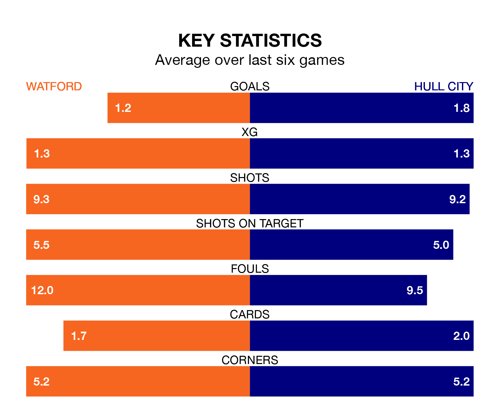

Watford face Hull City at Vicarage Road on Saturday looking to secure a first win in six EFL Championship games.
The Hornets have lost one and drawn four matches since they last earned three points – against Birmingham City on March 16.
They face a Hull side who have won two and drawn one over that time.
With 62 goals in 42 games so far this season, Hull are scoring more than average in the league with 1.5 goals per game. And they are conceding at an average rate, letting in 54 goals at a rate of 1.3 per game.
Watford are also above average scorers, with 1.4 goals per game, compared to a league average of 1.3. They have conceded 1.3 goals per game.
City are seventh in the table after 42 games, of which they have won 18 and drawn 11, earning 65 points.
The Hornets are eight places behind the Tigers in 15th, with 12 wins and 16 draws putting them on 52 points.
In the last three years, Watford and Hull have played each other on three occasions. They won one each, and they drew once.
Their last meeting was on December 2, when Watford won 2-1 away.
Watford's last match was on April 13, a 3-2 loss against Southampton, with Ismael Koné and Ryan Porteous getting the goals for the Hornets.
Hull beat Queens Park Rangers 3-0 last time out, also on April 13, with Fabio Carvalho, Jaden Philogene and Ozan Tufan on the scoresheet.
Updated: 11:31 (UTC), 15/04/24